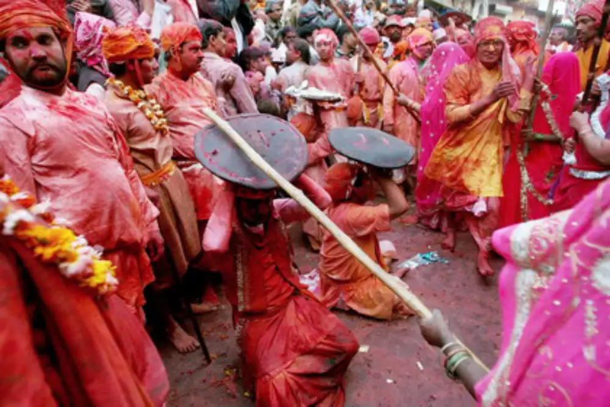
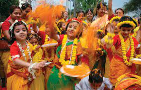
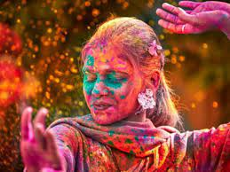

People start the celebration after burning the effigy of Holika, which signifies the victory of good over evil. This ceremony is performed after the sunset on Purnimasi tithe. The next day, which is Phalgun Krushnapaksh Panchami, is called Rangpanchami. People gather and smear 'gulal' and splash water on each other.
Traditions of Holi in South India

In South India, Holi is called by many names like Kaman Pandigai, Kamavilas and Kama-Dahanam. People sing melancholic folklores during this time to narrate the story of Kama Deva's wife, Rati. It celebrates the victory of spiritual bliss over marital bliss, hence, making the festival a love festival.
Traditions of Holi in West India

In Western India, particularly in Maharashtra, Holi is colloquially known as Rang Panchami or Shimga. The celebrations include all the Holika Dahan, a common tradition which involves lighting a firewood pyre on the night before the actual celebrations.
Traditions of Holi in East India

In Bengal, Holi is called Dol Yatra, or the swing festival. Traditionally the festival is celebrated with idols of Krishna and Radha are placed on swings and devotees take turns to swing them. Women dance around the swing and sing devotional songs, as men spray coloured water and powder called "Abeer".